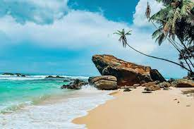
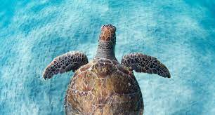
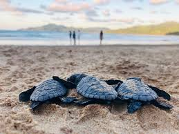

Sri Lanka shelters a good count of endangered species across the globe and one of the most exciting species amongst them is the sea turtle.
Sri Lanka has some remarkable attractions and appeals scattered along its coastal belt.The hatcheries along Sri Lanka's western coast regularly witnesses a good count of sea turtles.
Among these the few sea turtle hatcheries are indeed quite popular.Swimming all their way through the mighty Indian Ocean, the Sea Turtles reach hatcheries during their hatching period.
Every year hundreds of tourists and locals visit these charming establishments to witness the endearing charm of Sea Turtles.
Turtles are rarely seen because the sea is their habitat and only the females come ashore and that too only after dark. The land turtles and land tortoises are also seen in frequently.
Five of the seven species of sea turtles in the world visit the shores of Sri Lanka to breed. They are the Green Turtle (Chelonia mydas), Hawksbill Turtle (Eretmochelys imbricata), Olive Ridley (Lepidochelys olivacea), Loggerhead (Caretta caretta) and Leatherback (Dermochelys coriacea). The sea turtles are called Kesbawa in Sinhala and Amai in Tamil.

Best Time to Visit
The best time to visit any Sea Turtle Hatchery is during the period when the female sea turtles return to their nesting spot to lay off their eggs.
This is the only time when these sea turtles are in their trance-like state and won’t be much afraid with the sight of onlookers

Best Places to Spot Sea Turtles in Sri Lanka
There are many places in Sri Lanka where you can spot sea turtles.
Kosgoda Turtle Hatchery
Pigeon Island National Park
Mirissa Beach
Hikkaduwa Turtle Hatchery
Bentota Turtle Hatchery

Tips for Visiting Sea Turtle Hatchery
Here are some useful tips to reap out the maximum benefits out of your visit to the Sea Turtle Hatchery in Sri Lanka
To know more about the sea turtles, participate in their turtle conservation tour.
As a responsible visitor, make sure that you do not put the flashlights of your DSLR’s or cell phones on an ON mode as female sea turtles prefer to hatch in dark and silent zones.
Do not try to feed anything to any of this wildlife as it may make them susceptible to unexpected infections and diseases.
Maintain a reasonable distance from the nesting spots of these sea turtles.